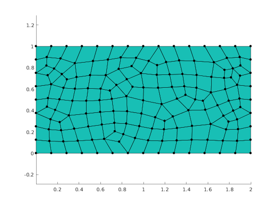

Illustrate higlighting selected elements
Contents
Generate mesh
Setup GMSH, create geometry description and generate mesh
clear variables; mp_setup_gmsh() meshingParams = struct('basename','rect','folder','.','dim',2, 'quadsonly', true); gmshgeom = mp_geom_rectangle([0,0], [2,1], struct('lc', 0.15)); [nodes, elements] = mp_gmsh_generate(gmshgeom, meshingParams);
Plot mesh
The simplest way to visaulize mesh obtained via mp_gmsh_generate is to use mp_plot_mesh. The return value is structure with handles to plotted objects that represent nodes and elements.
figure(1);
clf;
h = mp_plot_mesh(gca, nodes, elements);
axis('equal')
 Highlight elements by color
Create new figure
figure(2); clf; % Make copy of nodes and elements from previous figure hv = copyobj([h.nodes, h.elements], gca); axis('equal') mp_highlight_elements(hv(2), 129:160, 'yellow'); axis('equal') saveas(gcf, 'demo_highlight_elements.png'); % Report demo status mp_manage_demos('report', 'highlight_elements', true);